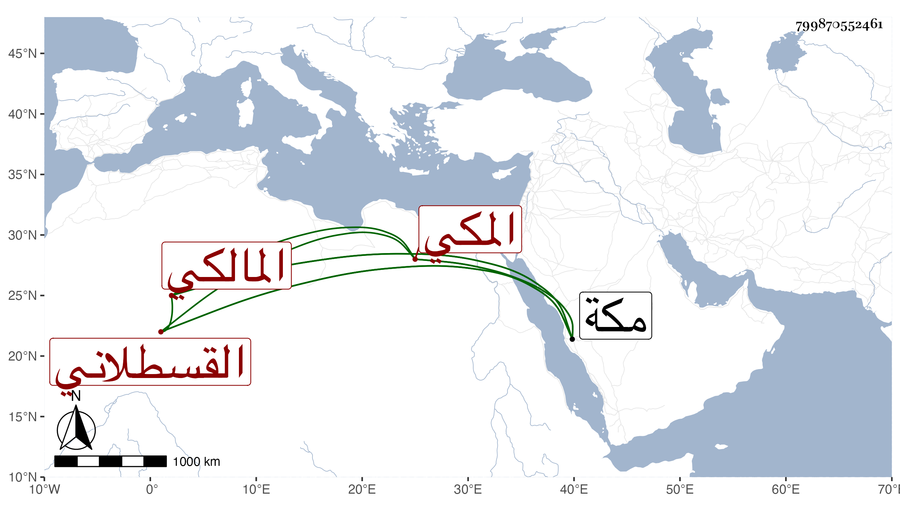

0902Sakhawi.DawLamic.ITO20230111-ara1.EIS1600.799870552461
Biography ID: 799870552461
إبراهيم بن القاضي كمال الدين أبي البركات محمد بن محمد بن أحمد بن حسن بن الزين محمد بن الأمين محمد بن القطب أبي بكر محمد بن أحمد بن علي القسطلاني المكي المالكي الشهير كأسلافه بابن الزين . ولد في رمضان سنة ست وعشرين وثمانمائة بمكة وسمع بها من خال والده الجمال المرشدي وأبي المعالي الصالحي وأبي شعر الحنبلي وأبي الفتح المراغي وجماعة وأجاز له في سنة ست وثلاثين آخرون . مات في ضحى يوم الأحد خامس عشري شوال سنة ستين بمكة .
